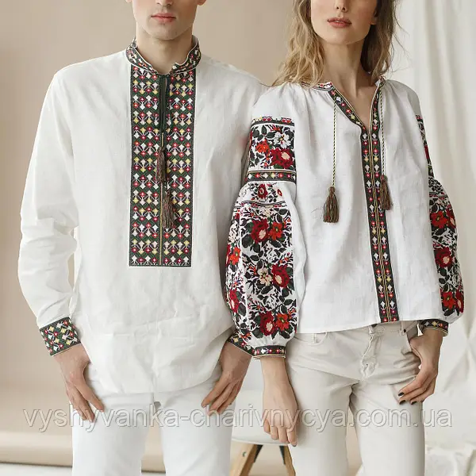

4 найцікавіших фактів про Україну
Українські вишиванки
Незрозуміло, як українські вишиванки встигли стати символом національної ідентичності, але вони дійсно є незмінною частиною українського народного костюма. Кожен візерунок має своє значення і символіку.
Писанка
Писанка – це українське великоднє яйце, яке розписують різними візерунками і символами. Це давнє українське мистецтво, яке передається з покоління в покоління.

Кобзарі
Кобзарі – це українські народні співці, які виконують народні пісні і розповідають історії про минуле. Їхня музика та поезія мають глибокий емоційний зміст і є невід’ємною частиною української культури.
Цікаві факти про кобзарів
- Мандрівні музиканти — кобзарі були народними співцями, які подорожували Україною.
- Сліпці-кобзарі — багато з них були сліпими, що додавало їхнім виступам особливу душевність.
- Репертуар — співали думи, історичні пісні та про героїчні події.
- Бандура — головний інструмент кобзарів, що символізує українську культуру.
Вишивані рушники
Рушники – це традиційні українські рушники, які прикрашаються вишивкою. Вони мають символічне значення і використовуються при різних урочистостях та подіях.
Maecenas lacinia felis nec placerat sollicitudin. Quisque placerat dolor at scelerisque imperdiet. Phasellus tristique felis dolor.
Maecenas elementum in risus sed condimentum. Duis convallis ante ac tempus maximus. Fusce malesuada sed velit ut dictum. Morbi faucibus vitae orci at euismod. Integer auctor augue in erat vehicula, quis fermentum ex finibus.
Mauris pretium elit a dui pulvinar, in ornare sapien euismod. Nullam interdum nisl ante, id feugiat quam euismod commodo. Sed ultrices lectus ut iaculis rhoncus. Aenean non dignissim justo, at fermentum turpis. Sed molestie, ligula ut molestie ultrices, tellus ligula viverra neque, malesuada consectetur diam sapien volutpat risus. Quisque eget tortor lobortis, facilisis metus eu, elementum est. Nunc sit amet erat quis ex convallis suscipit. ur ridiculus mus.